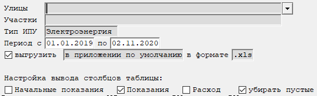

Бланк "Ведомость по показаниям индивидуальных счетчиков"
Данный бланк предназначен для отображения показаний счетчиков или потребленных объемов за указанный период с выбранной детализацией (рис. 1).

Рис. 1. Бланк " Ведомость по показаниям индивидуальных счетчиков"|
|
Бланк содержит графы множественного выбора. Подробное описание работы с данными графами находится тут. |
Рассмотрим поля, доступные для заполнения:
-
Улицы — выбираются улицы, по которым необходимо выполнить расчет. Возможен выбор произвольного количества улиц. Если оставить графу пустой, то отбор будет осуществляться по всем улицам.
-
Участки — выбираются участки, по которым необходимо выполнить расчет. Возможен выбор произвольного количества участков. Если оставить графу пустой, то отбор будет осуществляться по всем участкам.
-
Вид счетчиков - указывается, по каким счетчикам формировать ведомость - электроэнергии, воды или газа.
-
Период с ... по ... - указывается период формирования ведомости.
-
выгрузить ... в формате ... - позволяет выгрузить на диск таблицу через указанное приложение в указанном формате.
-
Настройка вывода столбцов таблицы - необходимо установить "галочки" напротив тех столбцов, которые необходимо вывести.
-
убирать пустые - настройка вывода столбцов, в которых показания или объемы равны нулю.
После заполнения полей, влияющих на расчет, необходимо пересчитать бланк.
Для этого нажмите кнопку
 на панели инструментов,
клавишу F9, или комбинацию клавиш Ctrl + Enter.
на панели инструментов,
клавишу F9, или комбинацию клавиш Ctrl + Enter.
После пересчета на экране отобрази(я)тся таблица(ы) с показаниями.